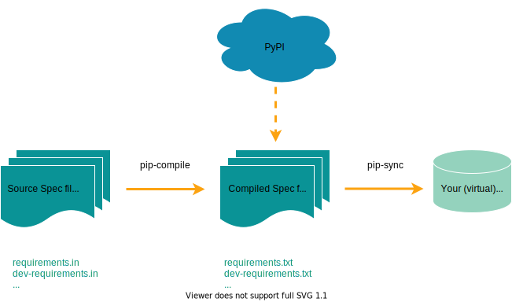

venvによるPython開発環境の管理をpip-toolsでアップデートする提案
venvによるPython開発環境の管理を pip-tools でアップデートする提案
〜Ryeのソースリーディングより〜
- Event:
PyCon Kyushu 2024 KAGOSHIMA
- Presented:
2024/05/24 nikkie
お前、誰よ
ソフトウェアエンジニアリングで突破するデータサイエンティスト（We're hiring!）
Python歴は6年。PyConで登壇多数
2022年以来ですね
皆さんのことを教えてください
簡単なアンケートにご協力ください🙏
副題 〜Rye のソースリーディングより〜
「Rye」を聞いたことがある🙋♂️
Ryeを試した or 使っている🙋♀️
Ryeのソースコードを少しでも覗いた🙋
pip-tools でアップデートする提案
「pip-tools」と聞いてピンと来る🙋♂️
pip-toolsを使っている🙋♀️
存在感を増すRye
中身を理解しようとRust実装を覗き始めた（2024年1月）
仮想環境のパッケージ管理に活かせる要素 が見つかりました。共有します
⚠️Ryeの採用については発表の範囲外。廊下で話しましょう！
おことわり
全Python使いが知るべきとは思っていないので「上級」
仮想環境という題材はありふれているかもしれませんが、本トークは 掘り下げ ます
macOS で動作検証しています
3部構成でお届けします
Pythonのパッケージ管理の基本をおさえる
pip-toolsの提案
Ryeの依存パッケージ管理の実装紹介
Pythonのパッケージ管理の基本をおさえる
上級の話に入る 前準備
インストールとは
仮想環境とは
そもそも パッケージ には 2種類 ある
Distribution package vs. import package (Python Packaging User Guide)
distribution package （配布 パッケージ）
pip install で指定する
pyproject.tomlのdependenciesに書く本トークの主題
import package
import文に書くimport packageはPython モジュール
パッケージをインストールする、とは
distribution packageの話（
pip install）パッケージの実体のコード（アーカイブファイル）のコピーを あなたのマシンに置く
実体のコードはどこから入手するの？
distribution packageたちの索引のWebシステム
一例が PyPI （ぱいぴーあい）
Python Package Index
pip installがデフォルトで見ている
pip が見ている景色
{kind=link}
PyPI以外のパッケージインデックスの例 🏃♂️
pip install の --index-url や --extra-index-url
指定する例： CPUのみのLinux環境で動かすPyTorch
% python -m pip install torch --index-url https://download.pytorch.org/whl/cpuインストールしたパッケージはマシンのどこにあるの？
site-packages というディレクトリ
% python3.12 -m pip show httpx
Location: /Library/Frameworks/Python.framework/Versions/3.12/lib/python3.12/site-packagesグローバルの site-packages に入れてしまっているので真似しないでください🙅♂️
pip install したパッケージはなぜ import できる？ 🏃♂️
site-packages が sys.path に入っているから 🏃♂️
% python3.12 -m site
sys.path = [
<略>
'/Library/Frameworks/Python.framework/Versions/3.12/lib/python3.12/site-packages',
]（一瞬 import package の話題でした）
🥟パッケージをインストールする、とは
パッケージインデックス（主にPyPI）から
distribution packageの 実体のアーカイブファイル をコピーし
マシンの site-packagesに配置 する（解凍などの詳細は今回は省略）
合わせてどうぞ（PyCon APAC 2023より）🏃♂️
仮想環境とは
ディレクトリ
Node.jsでいう
node_modules
仮想環境は ディレクトリ
仮想環境とは、特定のバージョンの Python と幾つかの追加パッケージを含んだ Python インストールを構成するディレクトリです。
仮想環境を作るツール
標準ライブラリの venv
サードパーティの virtualenv
virtualenvが先にあり、人気を受けて標準に入った（PEP 405）
仮想環境はこんなディレクトリ
.venv/
├── bin/
│ ├── activate
│ ├── pip
│ ├── pip3
│ ├── pip3.12
│ ├── python -> python3.12
│ ├── python3 -> python3.12
│ └── python3.12 -> /Library/Frameworks/Python.framework/Versions/3.12/bin/python3.12
├── lib/
│ └── python3.12/
└── pyvenv.cfg
シンボリックリンク！
.venv/
├── bin/
│ ├── activate
│ ├── pip
│ ├── pip3
│ ├── pip3.12
│ ├── python -> python3.12
│ ├── python3 -> python3.12
│ └── python3.12 -> /Library/Frameworks/Python.framework/Versions/3.12/bin/python3.12
├── lib/
│ └── python3.12/
└── pyvenv.cfg
.venv/lib/python3.12/ ができるのが嬉しい（後述）
.venv/
├── bin/
│ ├── activate
│ ├── pip
│ ├── pip3
│ ├── pip3.12
│ ├── python -> python3.12
│ ├── python3 -> python3.12
│ └── python3.12 -> /Library/Frameworks/Python.framework/Versions/3.12/bin/python3.12
├── lib/
│ └── python3.12/
└── pyvenv.cfg
なぜ仮想環境が必要なのか
仮想環境を使わないとすると
site-packagesが グローバルの1つ のみ同名ライブラリのバージョン違いが共存できない🙀
Pythonチュートリアルより
1つのインストールされたPythonが全てのアプリケーションの要求に対応することは不可能です。
📌Pythonでは開発プロジェクトごとに依存パッケージを分けよう
プロジェクトごとに仮想環境 を用意する
＝プロジェクトごとの
site-packages
その他の方法（本トークのスコープ外）🏃♂️
Anaconda
2023年6月 stapy#94 で取り上げ
Docker
Dev Containers時代のPython開発環境のあり方 （PyCon APAC 2023）
仮想環境の仕組み
環境変数
PATHを更新
$ source .venv/bin/activate
(.venv) $ python -V
Python 3.12.3
(.venv) $ .venv/bin/python -V # PATHが更新されていて、これが見つかっている
Python 3.12.3
(.venv) $ type python
python is /.../.venv/bin/python仮想環境の仕組み
pip install で仮想環境の
site-packagesにインストールされる
(.venv) % python -m pip show httpx
Location: /.../.venv/lib/python3.12/site-packages仮想環境の仕組み
importでも仮想環境のsite-packagesが参照される
(.venv) % python -m site
sys.path = [
<略>
'/.../.venv/lib/python3.12/site-packages',
]合わせてどうぞ（aodagさんがstapyで発表）🏃♂️
仮想環境の考え方
使い捨て（disposable）
移動やコピーはしない（同じ仮想環境を都度作る）
venv --- Creation of virtual environments （Python 3.12で更新された感）
環境を再現するには
python -m pip freezeはインストールされたパッケージ一覧を、python -m pip installが解釈するフォーマットで生成します。
チュートリアル 12.3. pip を使ったパッケージ管理
環境を再現 するコマンド
$ python -m pip freeze > requirements.txt
$ python -m pip install -r requirements.txtfreeze：動作する環境に入っているライブラリのバージョンを列挙
install：指定されたバージョンのライブラリをインストール
廊下お話しネタ requirements.txt という名 🏃♂️
拙ブログ Python使いはpip freezeの出力を常にrequirements.txtというファイルに保存する？ 文献を調べたところいくつか流派があるようです
ツールが強制することのない 慣習 なんですよね
（それとは別に、人力 という点もネック）
python -m pip freeze
% python -m pip freeze
anyio==4.3.0
certifi==2024.2.2
h11==0.14.0
httpcore==1.0.5
httpx==0.27.0
idna==3.7
sniffio==1.3.1pip install したのは httpx だけ🤔
依存パッケージには 2種類 ある
- direct:
私たちが pip install で指定
- transitive:
directな依存が依存するパッケージ（used with a direct object ref: Oxford辞書）
httpxを例に、2種類の依存
$ python -m pip install httpx # directの依存
Installing collected packages: sniffio, idna, h11, certifi, httpcore, anyio, httpx
Successfully installed anyio-4.3.0 certifi-2024.2.2 h11-0.14.0 httpcore-1.0.5 httpx-0.27.0 idna-3.7 sniffio-1.3.1pip freeze の小さな課題
directな依存もtransitiveな依存も1つの
requirements.txtにまとまるtransitiveな依存の削除 が大変
requirements.txt からの削除が大変
% # 前提として、Python 3.11で作った仮想環境を有効化しています
% python -m pip install transformers
$ python -m pip freeze > requirements.txt
% python -m pip install rouge-score
$ python -m pip freeze > requirements.txtrouge-scoreが不要になった
pip uninstall rouge-score ではrouge-scoreの依存は削除されない
rouge-scoreの依存も1つ1つ
pip uninstallが必要
全部uninstallしていいわけではない
rouge-scoreの依存には、transformersが依存 するパッケージも存在する
プロジェクトでtransitiveな依存のうち、rouge-scoreしか依存していないものを洗い出して 消したい
requirements.txtをバージョン管理していたらたやすいのかも（えてして忘れがち）
全部uninstallしていいわけではない
🥟仮想環境とは
ディレクトリ。プロジェクト用の site-packages を設ける
pip freezeして 都度作る 方法がチュートリアルでは案内されるtransitiveな依存 の管理が私にはツライ
venvによるPython開発環境の管理をpip-toolsでアップデートする提案
Pythonのパッケージ管理の基本をおさえる
pip-toolsの提案
Ryeの依存パッケージ管理の実装紹介
pip-toolsの提案
pip-toolsの紹介
pip-toolsのインストールに関して
pipx
仮想環境 ❤️ pip-tools
transitiveな依存の管理のツラさをどう解決するか
PoetryやPipenvなどの 強力 なパッケージ管理機能を持ったツール👍
ひねくれたnikkie「そこまで持ち出さなくてもできないかな」（これらのツールの機能全部を使うわけじゃないし）
そこで、pip-tools
Ryeが使っていて知った（後述）
transitiveな依存の管理 をうまく解決しているように感じる（本発表で提案）
参考：サーベイあります（4月のstapy）
登壇報告 | みんなのPython勉強会#103 にてPythonで仮想環境にライブラリをインストールするんだと（ただそれだけを）話しました
pip-tools
https://pypi.org/project/pip-tools/
pip-tools = pip-compile + pip-sync
2つのコマンド を提供
引用元 https://github.com/jazzband/pip-tools/blob/7.4.1/img/pip-tools-overview.svg
1️⃣ pip-compile
開発者は directな依存だけ を指定する
requirements.inpyproject.toml
pip-compileが（pip freeze同様の）requirements.txtを作ってくれる
pip-compile の例
% cat requirements.in
transformers
rouge-score
% pip-compile生成された requirements.txt （一部）
nltk==3.8.1
# via rouge-score
rouge-score==0.1.2
# via -r requirements.in
six==1.16.0
# via rouge-score
tqdm==4.66.4
# via
# nltk
# transformers2️⃣ pip-sync
仮想環境を
requirements.txtと 同期
% pip-sync --python-executable .venv/bin/python🥟pip-toolsを使った依存パッケージ管理
開発者がdirectな依存を指定（
requirements.inやpyproject.tomlなど）pip-compile で
requirements.txtを自動生成pip-sync で仮想環境を
requirements.txtと同期
pip-toolsの賢いところ
チュートリアルの
python -m pip freezeはインストールした結果をダンプするpip-toolsは、仮想環境に入れる 前 にライブラリの組合せを算出（
pip-compile）
pip-compile-multi 🏃♂️
pip install awesomelib[extra]extraごと に
pip-compileできる詳しくは pip-compile-multi体験記：小さく分けたrequirementsファイルたちを元に、環境をlockして管理できる！
transitiveな依存の管理の課題に対して
% cat requirements.in
transformers
rouge-score
% pip-compile
% pip-sync --python-executable .venv/bin/pythonrouge-scoreは使わないことに
% cat requirements.in # 開発者が編集した後
transformers
% pip-compile
% pip-sync --python-executable .venv/bin/pythonrouge-scoreだけが依存するパッケージも消えた！
% pip-sync --python-executable .venv/bin/python
Found existing installation: rouge_score 0.1.2
Uninstalling rouge_score-0.1.2:
Successfully uninstalled rouge_score-0.1.2
Found existing installation: six 1.16.0
Uninstalling six-1.16.0:
Successfully uninstalled six-1.16.0出力の一部抜粋
pip-tools利用シーンより
このスライドのリポジトリ 2024-slides 👈
Djangoの練習プロジェクト djoser-practice
dependabotが教えてくれる
直近で「requestsを 2.32.0以上 にしよう」
requestsは、transitiveな依存にあたる（directな依存も同様手順）
特定のパッケージの バージョンを上げる ワークフロー
% pip-compile --upgrade-package requests
% pip-sync --python-executable .venv/bin/pythonhttps://github.com/ftnext/2024-slides/commit/62eb18134e95704acc9fb21cbd0e86f437153f88
🌯pip-toolsの提案
transitiveな依存の管理の課題にアプローチ
開発者はdirectな依存だけを指定する
pip-toolsが開発者に代わってtransitiveな依存を管理してくれる
参考 pip-toolsについて（記事版）🏃♂️
pip-toolsのインストールについて（の意見）
README では、仮想環境にインストールするよう案内される
どのプロジェクトの仮想環境にも入れる？🤔
pipx で1回だけ入れるのを推して参る
% pipx install pip-tools --python python3.11pipx 1.5.0
Python 3.11.7
pip-tools 7.4.1
pipxって、何よ？
PyPIをApp Store化計画
コマンドラインだけで動かすパッケージを、pipxが管理する個別の仮想環境 にインストールしてくれる
いつも仮想環境にインストールするパッケージは pipx install でいいのでは
Installing stand alone command line tools
pipxが pip-toolsだけのグローバルな仮想環境 を管理してくれる
mypyや Ruff なども私は
pipx installしたい
pipx自体のインストール
macOSは brew install pipx 🙋♂️
Ubuntu 23.04以降で apt install pipx
python3 -m pip install --user pipx
📌 pipx ensurepath をお忘れなく
https://github.com/pypa/pipx/tree/1.5.0?tab=readme-ov-file#install-pipx
venvによるPython開発環境の管理をpip-toolsでアップデートする提案
Pythonのパッケージ管理の基本をおさえる
pip-toolsの提案
Ryeの依存パッケージ管理の実装紹介
Ryeの依存パッケージ管理の実装紹介
Rustは雰囲気で読んでいます（私の技量不足でPythonほど深掘れません）
Rye
Pythonも依存パッケージも 両方 管理する
Rust のような開発体験（Hatch が近いかも）
https://rye.astral.sh/ にインストール手順
Ryeによる開発環境の例
git clone https://github.com/ftnext/unko-by-rye.gitrye sync
た っ た こ れ だ け
Ryeで管理するPythonプロジェクトの構成
.
├── .python-version
├── .venv/
├── pyproject.toml
├── requirements.lock
└── requirements-dev.lockPythonの管理
.
├── .python-version # Pythonのバージョンの記載
├── .venv/
├── pyproject.toml
├── requirements.lock
└── requirements-dev.lock依存パッケージの管理
.
├── .python-version
├── .venv/ # lockファイルと同期した仮想環境
├── pyproject.toml
├── requirements.lock # pyproject.tomlのdependencies考慮
└── requirements-dev.lock（かつての）Ryeの実装
依存パッケージ管理：virtualenv + pip-tools
最新の 0.34.0 ではpip-toolsに代えて uv がデフォルトに
Rye「開発者は仮想環境を触らないで rye sync だけして」
プロジェクトの仮想環境
.venvにpipがない
% .venv/bin/python -m pip list
/.../.venv/bin/python: No module named pippipのない仮想環境の作り方
% python -m venv .venv/no_pip --without-pip
% virtualenv .venv/virt_no_pip --no-seed # Ryeはこちらpipのない仮想環境に pip-sync する ちょうぜつ
PYTHONPATH環境変数一時ディレクトリにシンボリックリンク
PYTHONPATH 環境変数
% .venv/no_pip/bin/python -m pip list
/.../.venv/no_pip/bin/python: No module named pip
% python -m venv .venv/with_pip --upgrade-deps
% PYTHONPATH=$PWD/.venv/with_pip/lib/python3.11/site-packages .venv/no_pip/bin/python -m pip list
Package Version
---------- -------
pip 24.0
setuptools 70.0.0一時ディレクトリにシンボリックリンク
% TMPDIR=$(mktemp -d)
% ln -s $PWD/.venv/with_pip/lib/python3.11/site-packages/pip $TMPDIR/pip
% PYTHONPATH=$TMPDIR .venv/no_pip/bin/python -m pip list
% PYTHONPATH=$TMPDIR pip-sync --python-executable .venv/no_pip/bin/python
% # pip-sync --python-executable .venv/no_pip/bin/python では「ModuleNotFoundError: No module named 'pip'」🥟Ryeの依存パッケージ管理の実装紹介
仮想環境 + pip-tools + 開発者に触らせない 工夫
pipがない仮想環境でも
PYTHONPATHを使えば、pipがある環境のように操作できる！
まとめ🌯 venvによるPython開発環境の管理をpip-toolsでアップデートする提案
仮想環境 +
pip freezeにツラさを感じている方（＝過去の私）へ開発者はdirectな依存パッケージを指定。pip-toolsがtransitiveな依存を管理
ご清聴ありがとうございました
待ってます お話ししましょう 廊下 にて
Appendix
本編に盛り込めなかったコンテンツ
注目を集めるRye
Twitter
from:@voluntas Ryemethaneさん ryeをpyenvのように使う
PyCon APAC 2023とRye
Pythonでのパッケージング：エコシステムの理解と現場での活用 (slide=41)
Comparison of Packaging Tools in 2023 (slide=31, 32)